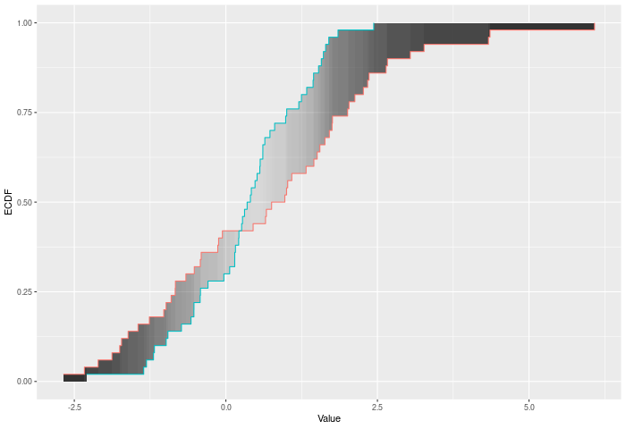

| two_sample {twosamples} | R Documentation |
A two-sample test based on the DTS test statistic (dts_stat). This is the recommended two-sample test in this package because of its power. The DTS statistic is the reweighted integral of the distance between the two ECDFs.
dts_test(a, b, nboots = 2000, p = default.p, keep.boots = T, keep.samples = F) two_sample( a, b, nboots = 2000, p = default.p, keep.boots = T, keep.samples = F ) dts_stat(a, b, power = def_power)
a |
a vector of numbers (or factors – see details) |
b |
a vector of numbers |
nboots |
Number of bootstrap iterations |
p |
power to raise test stat to |
keep.boots |
Should the bootstrap values be saved in the output? |
keep.samples |
Should the samples be saved in the output? |
power |
also the power to raise the test stat to |
The DTS test compares two ECDFs by looking at the reweighted Wasserstein distance between the two. See the companion paper at arXiv:2007.01360 or https://codowd.com/public/DTS.pdf for details of this test statistic, and non-standard uses of the package (parallel for big N, weighted observations, one sample tests, etc).
If the wass_test() extends cvm_test() to interval data, then dts_test() extends ad_test() to interval data. Formally – if E is the ECDF of sample 1, F is the ECDF of sample 2, and G is the ECDF of the combined sample, then
DTS = Integral (|E(x)-F(x)|/sqrt(2G(x)(1-G(x))/n))^p
for all x. The test p-value is calculated by randomly resampling two samples of the same size using the combined sample. Intuitively the DTS test improves on the AD test by allowing more extreme observations to carry more weight. At a higher level – CVM/AD/KS/etc only require ordinal data. DTS (and Wasserstein) gain power because they take advantages of the properties of interval data – i.e. the distances have some meaning. However, DTS, like Anderson-Darling (AD) also downweights noisier observations relative to Wass, thus (hopefully) giving it extra power.
In the example plot below, the DTS statistic is the shaded area between the ECDFs, weighted by the variances – shown by the color of the shading.

Inputs a and b can also be vectors of ordered (or unordered) factors, so long as both have the same levels and orderings. When possible, ordering factors will substantially increase power. The dts test will assume the distance between adjacent factors is 1.
Output is a length 2 Vector with test stat and p-value in that order. That vector has 3 attributes – the sample sizes of each sample, and the number of bootstraps performed for the pvalue.
dts_test(): Permutation based two sample test
two_sample(): Recommended two-sample test
dts_stat(): Permutation based two sample test
wass_test(), ad_test() for the predecessors of this test statistic. arXiv:2007.01360 or https://codowd.com/public/DTS.pdf for details of this test statistic
set.seed(314159) vec1 = rnorm(20) vec2 = rnorm(20,0.5) dts_stat(vec1,vec2) out = dts_test(vec1,vec2) out summary(out) plot(out) two_sample(vec1,vec2) # Example using ordered factors vec1 = factor(LETTERS[1:5],levels = LETTERS,ordered = TRUE) vec2 = factor(LETTERS[c(1,2,2,2,4)],levels = LETTERS, ordered=TRUE) dts_test(vec1,vec2)